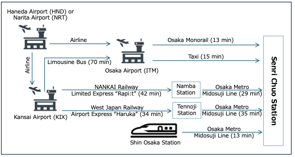

How to get to Senri Chuo Station from major airports and stations is as follows.

Detailed directions from Senri Chuo Station to Senri Life Center is at the following web site.
https://www.senrilc.co.jp/access/english.html
The route map of Osaka, mainly the Osaka Metro, is as follows.
https://subway.osakametro.co.jp/en/guide/routemap.php